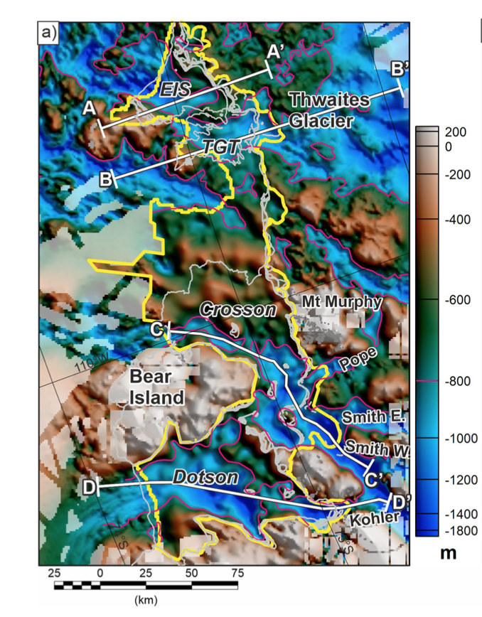

Seafloor depths around Antartica: The depth of the ocean is called bathymetry and equivalent to topography or elevation on land. The bathymetry of the seafloor leading up to and under the floating Thwaites ice shelf, is of critical importance in modeling and understanding pathways and barriers of deep oceanic heat to the ice sheet (see map of Ocean Temperatures at 550 m). In this map you can see the deep troughs in front of Thwaites Glacier that guide water up under the ice. Several ITGC projects have been adding data to our understanding of the sea floor bathymetry, including THOR and BAS support flights. Click on the map for specific seafloor depths and click Audio for a short story guide as you explore the map. LISTEN AND EXPLORE TO LEARN MORE!


<p></p>

Caption: The image is from gravity collected from the BAS support flights for ITGC (Jordan et al, 2020). The yellow outlines the gravity data region. The pink line outlines a newly identified channel area > -800m deep funneling warm water right up to Thwaites glacier. Light grey lines mark grounding lines and ice shelf edge. 